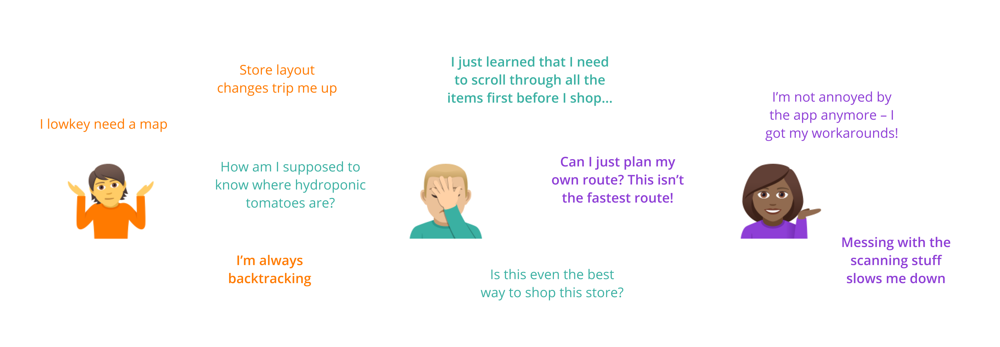
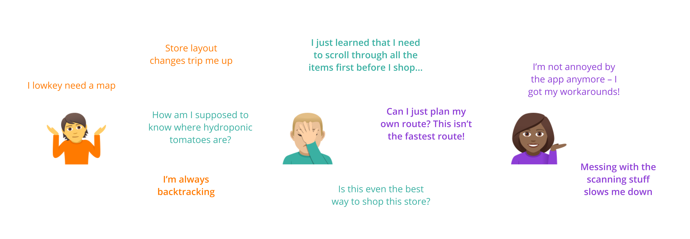

Disclaimer: I am not employed by nor affiliated with Instacart (although I would love to try being a shopper!). This is a design challenge completed for my own development as a new designer.

Flexibility. Freedom. Fun. This is what draws shoppers to work for Instacart.
Shopping for Instacart is as much of an experience for the shopper as it is for the customer getting groceries delivered to their doorstep. It's in the best interests of everyone (Instacart and their customers alike) for shoppers to do their job well – and feel good doing so.
A well-designed shopper experience is crucial
Living alone without a vehicle during the summer, I was overjoyed to discover a service like Instacart. I looked forward to getting my grocieres delivered each week by smiling shoppers who donned carrot-print lanyards.
Everything was awesome until one week, when I pulled an evil-customer-move and put in an adventurous order from Aldi. Speciality Aldi goodies galore. Organic dried mangos. Jalapenos in a jar. I watched the app as my shopper picked my order – it took a while! She had trouble finding several items and ended up selecting multiple replacement items. She was apologetic as she made the delivery: "I'm new and just couldn't figure out the store today."
How can Instacart help shoppers breeze through these inevitable roadbumps? While Instacart has an in-person, in-store prescence for training and supervising shoppers, the majority of the shopper experience hinges on the shopper app. How might we design this app to best support shoppers?
Understanding shopper pain-points
To gain insight on what the shopper experience looks like, I went searching online and found a subreddit and a Discord chatroom for Instacart shoppers. I made posts asking questions and chatted individually with two shoppers.
I gathered my observations on post-it notes and organized them into themes to see which aspects of the shopping experience I could focus on in my redesign.

Blue for pain-points, yellow for actions shoppers take in response
I decided to focus on the in-store shopping experience because this is where the design of the shopper app has the most direct impact on shopper performance. It can be optimized to help shoppers complete their job more efficiently and accurately – and reduce the mental-toll of navigating tricky shopping situtations.
😅 Note: Since I had no way of exploring the shopper app myself, I relied on screen-recordings and screenshots from good-internet-samaritans to build my understanding of how the app worked.
So who has these problems – and how are they affected?
Taking what I had seen online and read from shopper interviews on Instacart's blog, it was clear that shoppers with different skills and experience experienced Instacart shopping quite differently. I captured the varying levels of experience into 3 types of shoppers:
 

Instacart assumes shoppers are like Fiona. Yet from looking at Instacart's shopper stats, it seems that most shoppers are either newbies or just getting started. Helping these less-seasoned shoppers emulate the behaviors of seasoned shoppers can help ensure shopper performance quality and customer satisfaction.
However, I still chose to focus on the pain-points that seasoned-shoppers like Fiona faced – which were most directly related to the app itself. There are inefficiencies in the app that are slowing these shoppers down. But time is absolutely of the essence in this gig-economy game.